Free You Next
data driven realities
Kasper Jordaens
www.kaotec.org
@kaosbeat
artist
research engineer
data
AI
generative
hacktivism
soul
Context
data and privacy
hacktivism
Alternative Facts - 2023
S.N.E.A.K.P.E.E.Q
Surveillance N Enforcement Application, Kinda Privacy Endangering & Ethically Questionable
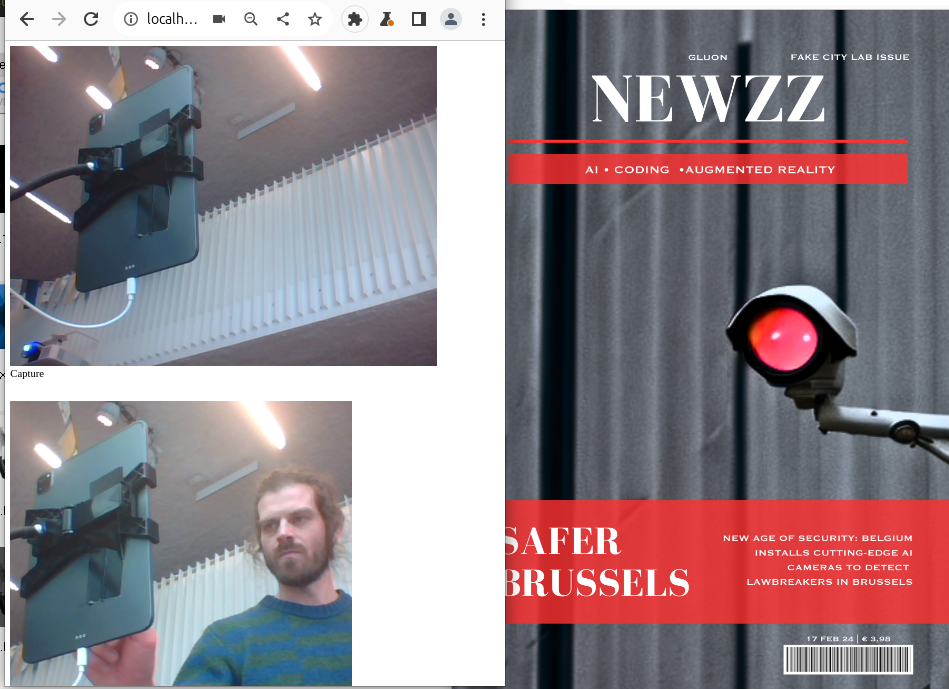 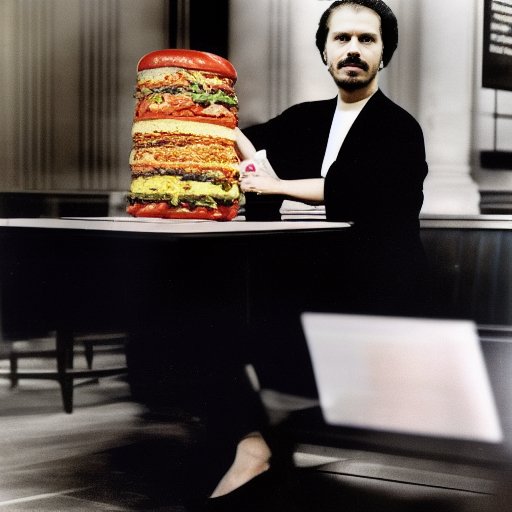 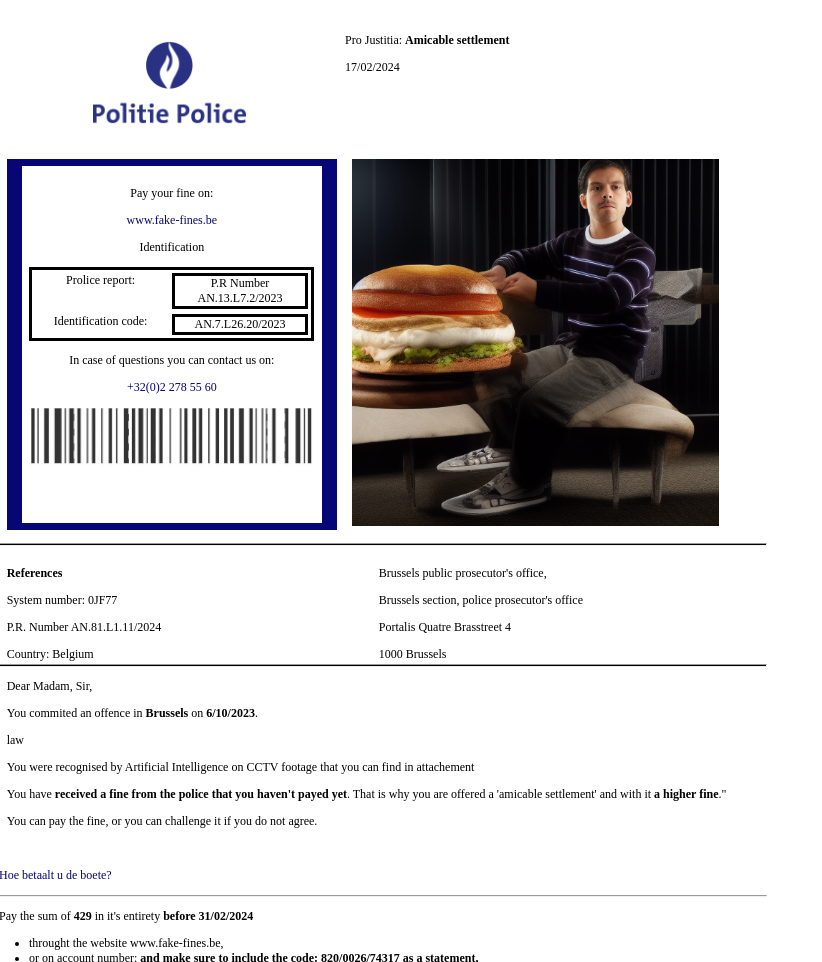


NetGlitch
DATA Intersect study
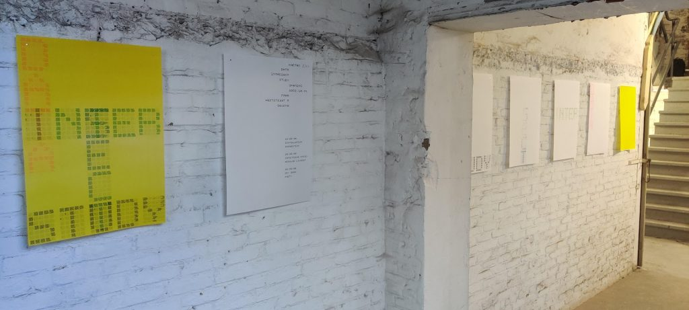
 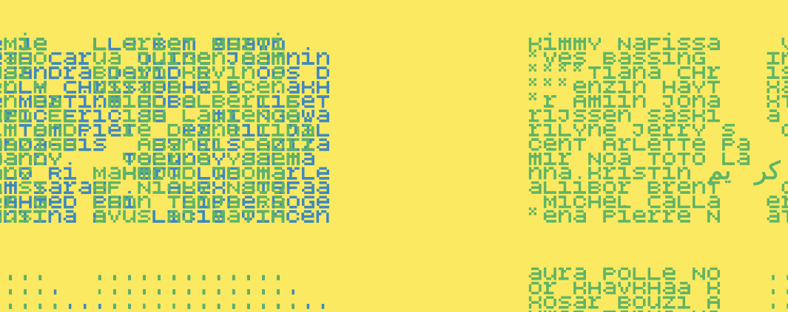
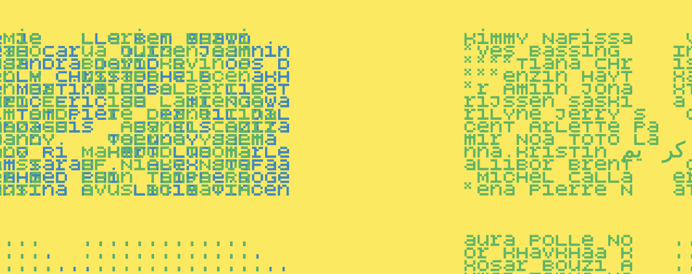
 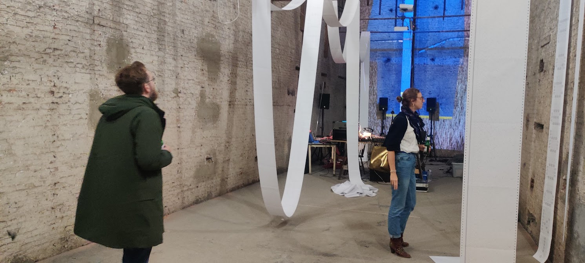
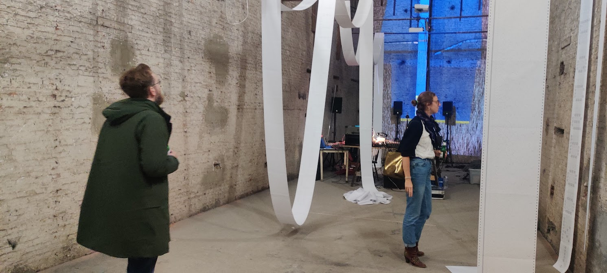
 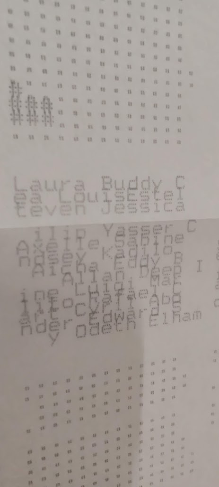
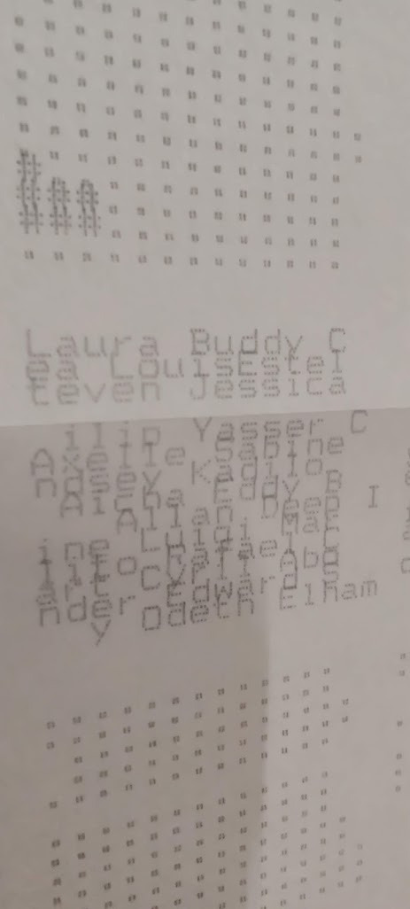
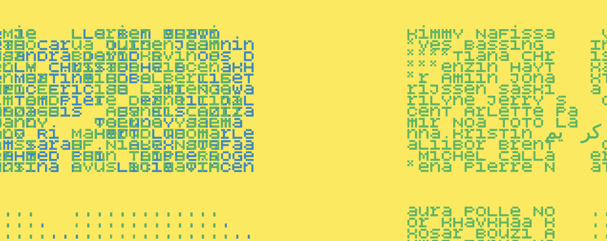
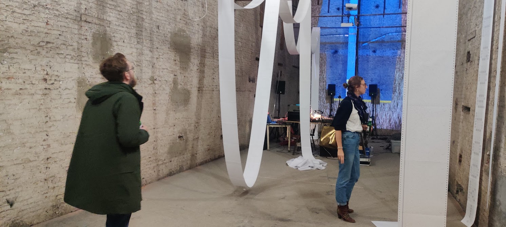
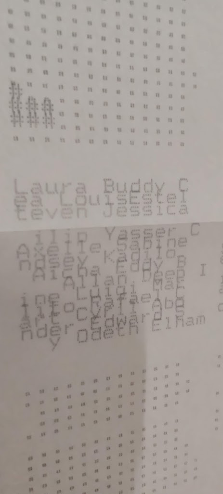
Context
Generative Art & AI
Oblique Diffusions
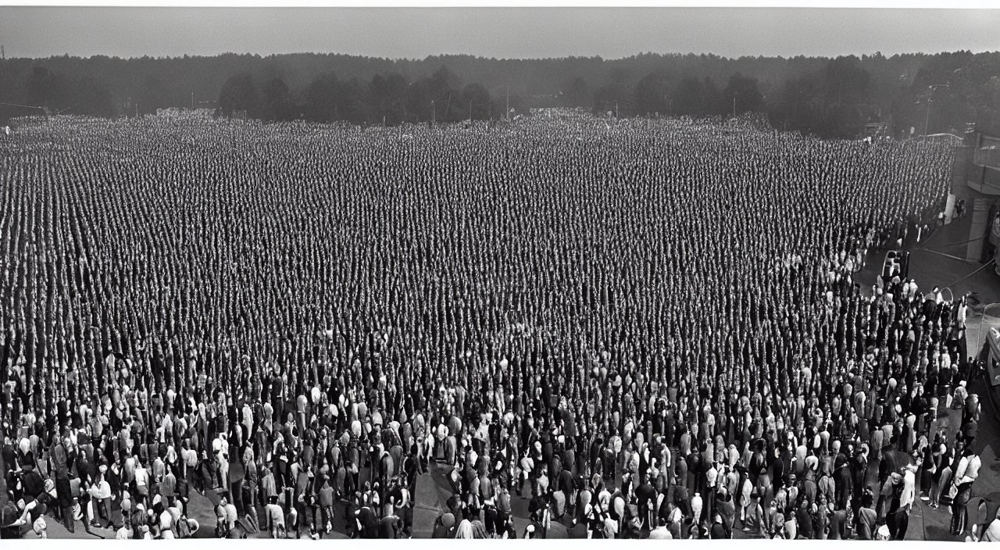
Cluster Analysis

Convert The Rhythm To A Melody

fill Every Beat With Something
Get Your Neck Massaged

Imagine The Music As A Set Of Disconnected Events
the Tape Is Now The Music

twist the spine
Oblique Diffusions - 2022
collab with Nicolas Provost


Flemisch Raving Masters - 2023
Context
Live Coding
Live Coding
BOTBOP
Learnings
Project
1. collect data
use installation to collect
2. transform data
almost realtime feedback from installation
3. perform data
use data in performance, bring soul
installation
&
performance
Combine

+

=